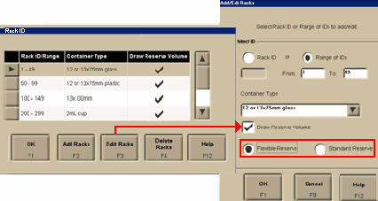
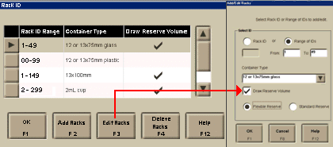

Select
Configure > System Setup > Rack ID Setup > Edit Racks.
Select
Draw Reserve Volume.
Select either
Flexible Reserve or
Standard Reserve to configure the selected rack ID range for the reserve volume feature to be used.

(Optional) Configure no-reserve racks.
Select
Configure > System Setup > Rack ID Setup > Edit Racks.
Clear the
Draw Reserve Volume check box for specified ranges of Rack IDs.
Note: The default is the
Draw Reserve Volume selected for all racks.

Reserve rack labels are provided to identify the designated No-Reserve, Flexible Reserve, and Standard Reserve racks. Apply the labels directly above the sample container type label.